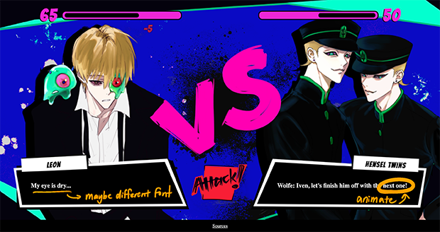

Final Project
Expert Review Report
Posted on
Who critiqued your work and what qualifications do they possess that makes their opinions on design valid?
Professor Glenda Drew of the Design Department here at UC Davis who specializes in digital media, film/video, motion graphics, photography, graphics, augmented reality, interactivity and audience participation.
TA Samantha Mah: undergrad design tutor
Design critique notes: what is strong and what can be improved in terms of visual design for the project.
Glenda Drew
Strengths:
Colors are well coordinated
Design element shapes have good contrasts
Great composition overall
Improvement suggestions:
Suggested using svg in the future instead of png to retain resolution
Or use a loading screen to load assets of higher resolution
Responsive sizes
Dialogue animation
Samantha Mah
Strengths:
Colors choices are really nice, the pink, cyan, blue, and black work really well
Improvement suggestions:
Add span for text in dialogues and use class to style it. Can make certain text bold, scale, or change color.
Change the font of the dialogue text to coordinate with the rest of the theme.
Include at least one image from your project, marked up with improvements to be made
